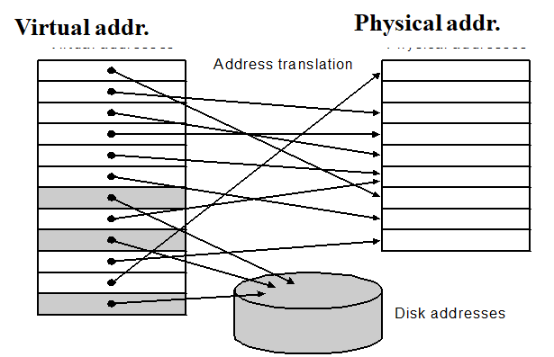
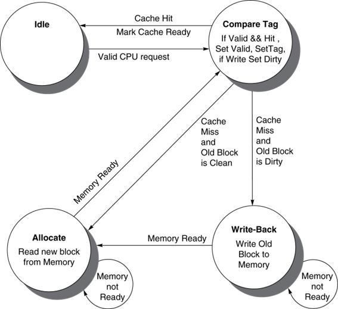

Chapter5 Large and Fast: Exploiting Memory Hierarchy¶
Memory Technologies¶
SRAM¶
Cache
- 速度快，但占空间大
DRAM¶
Memory
-
占空间小，但速度慢
-
需要刷新
Flash Storage¶
Nonvolatile semiconductor storage
- 比disk快100-1000倍
- 更小，更省电
- 但是价格更贵
Disk¶
Nonvolatile, rotating magnetic storage
- 保存时间更长
- 更容易修复
| Memory technology | Typical access time | Cost per GByte (2012) ($) |
|---|---|---|
| SRAM | 0.5-2.5ns | 2000-5,000* |
| DRAM | 50-70ns | 20-75 |
| Magnetic disk | 5,000,000-20,000,000ns | 0.2-2 |
The basics of Cache¶
Hit | Miss¶
Read hits¶
找到需要读取的数据
Read miss¶
- 指令cache miss
- 数据cache miss
Write hits¶
write-back: Cause Inconsistent¶
- 数据只写在cache里
- Strategy---在发生冲突时再把数据写回memory(更快)
write-through: Ensuring Consistent¶
- 每次都把数据同时写在cache和memory
- strategy---同时更新cache和memory
- 更慢---write buffer
Write miss¶
Write allocate¶
- 发生write miss时，先把block读取到cache里再进行后续操作
Write around¶
- 发生write miss时，直接在内存里进行写，不需把block读入cache
通常情况下，有一下策略搭配
- write-back --- write allocate
- write-through --- write around
Block Placement¶
Direct Mapped Cache¶
block只能放在指定的位置


Fully associative¶
block可以放在任意位置
Set associative¶
把block地址分成几个sets，block只能放到相应的set里面


Strategy of block Replacement¶
Random replacement¶
随机挑选其中一个block
- 在硬件中更容易实现
- 在cache里分布均匀
- 但是有可能会替换掉马上要被使用的block
Least-recently used (LRU)¶
每次都替换掉最近最少用的一个block
实现：对每个block进行计数，每隔一段时间+1，当block被访问时清零。每次都替换计数最大的block。
- 建立在最近使用的block更有可能被访问的假设下
- 但是需要额外的bits来进行计数
First in,first out(FIFO)¶
每次都替换掉最早读取进来的一个block
Virtual Memory¶

Page Table | 页表¶

Note
页表存储在Memory里
地址翻译（虚拟地址 \(\rightarrow\) 物理地址）¶

Page Fault¶
虚拟地址对应的页在内存中不存在，需要从外存读入数据。
- Takes millions of clock cycles
- Handled by OS code
可以通过以下方法减小page fault rate:
- Fully associative placement
- Smart replacement algorithms
Page Table大小计算¶
例：
Assume:
- Virtual address is 32 bits
- page size is 4KB
- Entry size is 4 Bytes
\(Number~of~page~table~entries=\frac{2^{32}}{2^{12}}=2^{20}\)
\(Size~of~pag~table=2^{20}entries\times 4Bytes/entry=4MB\)
Note
Entry的数量等于index的数量。例如对于2-set-associative，entries的数量为页表列数/2。
Note
页表中每行的数据按字对齐，即对齐到4Bytes。注意包括valid bit和dirty bit。(dirty bit用于表示该数据是否已写回外存，在write-back策略中使用)
TLB¶
可以理解为用于页表的cache。

当 TLB miss 的时候，处理器去 page table 查找对应的项；如果发现对应项是 valid 的，那么就把他拿到 TLB 里（此时被替换掉的 TLB entry 的 dirty bit 如果是 1，也要写回 page table）；否则就会触发一个 page fault。

Using FSM to Control a simple Cache¶

